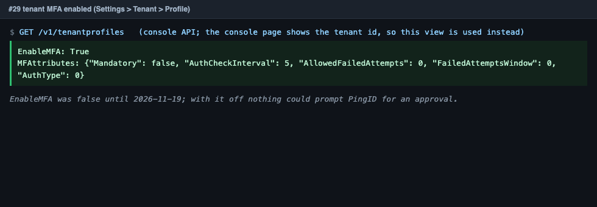
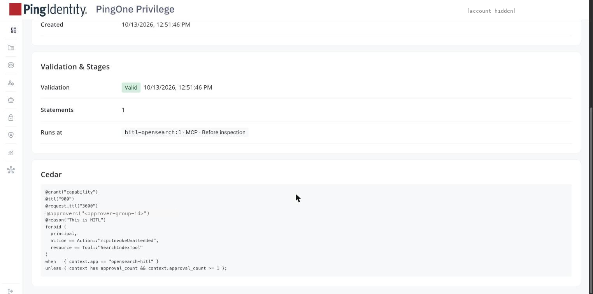
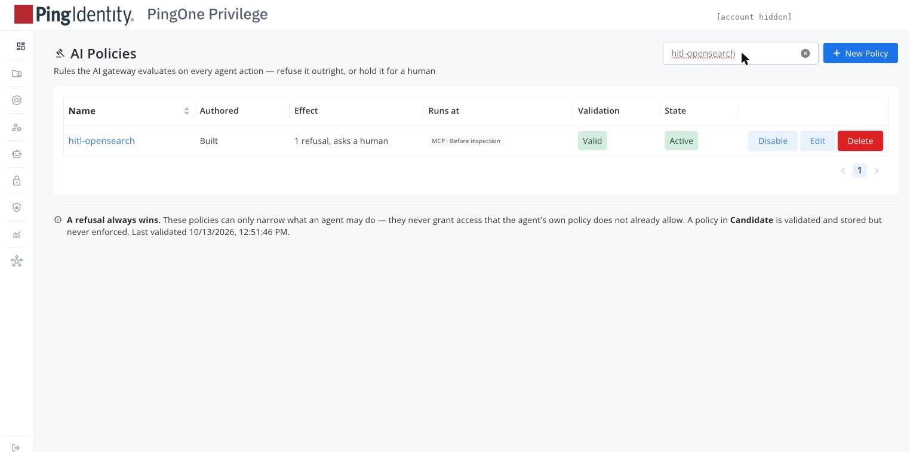
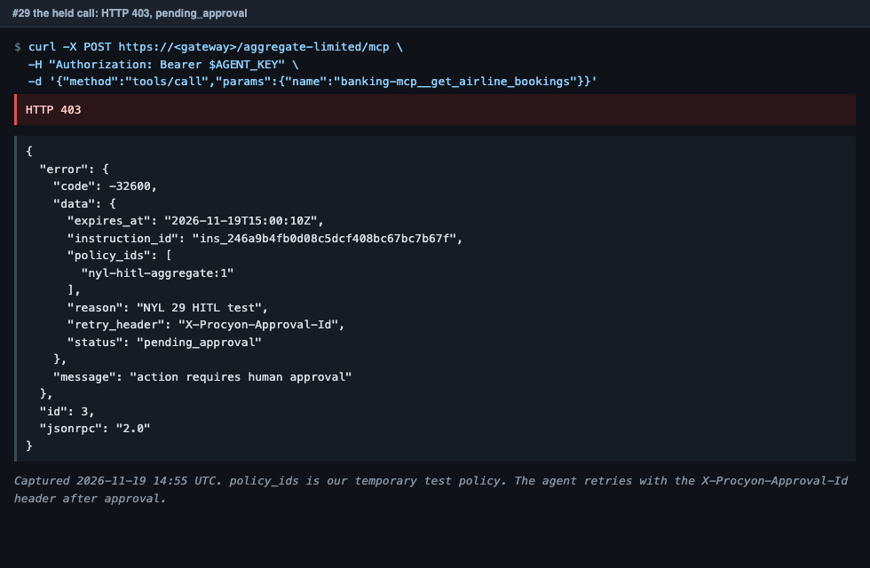
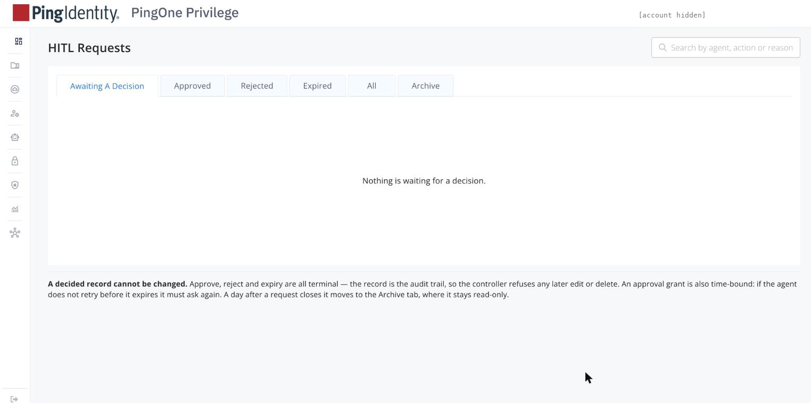
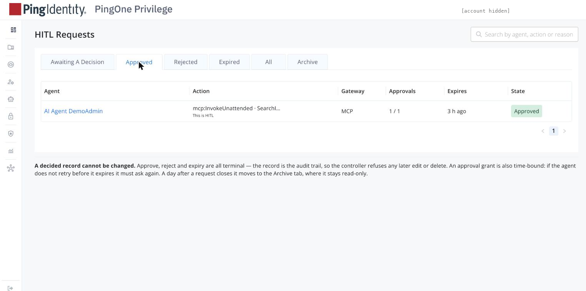
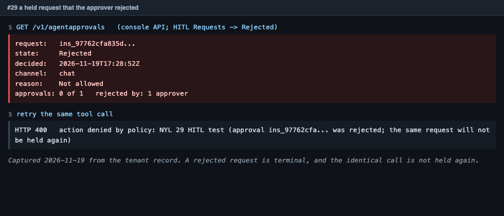
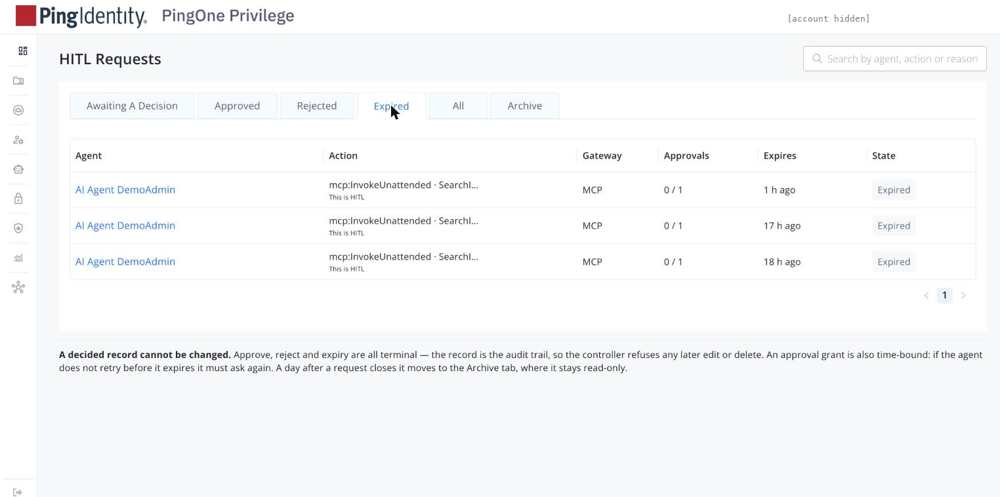

What this proves
The test: configure a protected action requiring approval; test approve, deny and timeout paths. An MCP tool call that passes through the Privilege gateway is held by a policy. A person approves it and the approval is confirmed with PingID (push or passcode). The agent then retries and the call goes through.
MCP client --> Privilege gateway --> policy: "Require human approval"
| HTTP 403 pending_approval
v
approver: HITL Requests page + PingID prompt --> Approved
|
MCP client retries within the window --+--> call succeedsBefore you start
| Need | Detail |
|---|---|
| Privilege console admin | Signed in as an admin of a tenant you own (the MFA setting in step 2 is tenant-wide). |
| PingID on the approver's phone | Paired to the approver's account. The app's Account screen reads: "This account will authenticate you by sending a notification for you to approve or you can use the passcode." |
| An MCP server behind the gateway | Reached through the gateway URL with an Authorization: Bearer key or user sign-in. |
| An MCP client | Any client that can call a tool through the gateway and show the response. |
Pair PingID for the approver
Manage the approver's MFA devices in the account page (Authentication — My Account). Pair the phone, then confirm the PingID app shows the approver's account on its Account screen. Never share the passcode or approve a prompt you did not start.

Turn MFA on for the tenant
- Console: user menu (top right) → Settings.
- Tenant → Profile → Tenant Information → Edit.
- Set MFA to Enabled (the reference recording shows
Enabled (120 minutes)), then save.

Create the human-approval AI policy
Console: AI Policies → create a policy.
| Field | Value |
|---|---|
| Name | opensearch-hitl (any name; it cannot change after saving) |
| State | Active |
| Authoring tab | Build a rule (other tabs: From a template, Write Cedar) |
| Gateway / when | MCP tool call, On the request |
| Outcome | Require human approval |
| MCP server | The server name the gateway uses (opensearch in the reference) |
| Caller | Any caller (or a person or group) |
| Target | One named tool (IndexMappingTool) or Any tool |
| Grant shape | This transaction only |
| Approvals needed | 1 |
| Agent retry window | 90 seconds |
| Request stays open | 120 seconds (blank = one hour) |
| Who may approve | Anyone with admin rights (or a group or user) |
| Reason shown to the caller | for example Above Demo HITL |
The page previews the Cedar it will save:
@grant("transaction")
@ttl("90")
@request_ttl("120")
@reason("Above Demo HITL")
forbid (
principal,
action == Action::"mcp:InvokeUnattended",
resource == Tool::"IndexMappingTool"
)
when { context.app == "opensearch" }
unless { context.has approval_count && context.approval_count >= 1 };Save. The detail page should show State Active, Validation Valid, Effect "1 refusal, asks a human". The short windows keep a demo from waiting; lengthen them for real use.

hitl-opensearch): forbid unless approval_count is at least 1. This tenant's policy uses @ttl 900 and @request_ttl 3600, not the short demo values in the table above. The approver group id and account are masked.
Run the three paths
Approve
- In the MCP client, call the protected tool. It is refused with HTTP
403, JSON-RPC-32600, andstatus: pending_approval, aninstruction_idandretry_header: X-Procyon-Approval-Id. - Console: HITL Requests → Awaiting A Decision (tabs: Awaiting, Approved, Rejected, Expired, All). Approve it.
- PingID asks for confirmation: push ("Are you trying to sign on?", approve with the blue button) or the 6-digit passcode.
- Re-run the tool within 90 seconds. It now succeeds and the request moves to Approved.

403, -32600, pending_approval, instruction_id.


mcp:InvokeUnattended, MCP gateway, approvals 1 / 1, state Approved), so an approval has been recorded on this tenant. The retried call's result is not part of this capture. Account masked.Deny
Make a second protected call. In HITL Requests choose Reject (on the PingID prompt, "No, it's not me" also rejects). The request moves to Rejected and a retry is refused again.

Timeout
Make a third protected call and do nothing. After the request window (120 s here) it moves to Expired. Approving it afterwards is refused. A decided record cannot be changed: approve, reject and expiry are all terminal.

Gotchas found running it on our tenant (2026-11-19)
| Gotcha | What to do |
|---|---|
Tenant MFA was off (EnableMFA: false) and nothing could prompt PingID. | Turn it on first (the step above). It is tenant-wide: every admin and approval sign-in then asks for MFA, so check that your other demo accounts have a device. |
| A hold sends no notification to anyone. The held request just sits under Awaiting. | The PingID push appears when the approver clicks Approve and the tenant steps up MFA. No push-only approval surface was found; the other channels are chat integrations. |
The approver must be the signed-in console user. One earlier request was approved by a different account (channel chat, no PingID). | Sign in to the console as the account whose phone you want to push to, and name that account in the policy's approvers. Afterwards check the request's events: the channel and assurance show how it was really approved. |
A policy created through the API is only a candidate if its State is empty: the gateway logs shadowing 1 candidate policies and never holds anything. | Set State: Active (the console does this when you save from the UI). |
An agent key gets a bare 403 on a door set to user-token authentication, before any policy runs. | Use a door the key can reach, or call as a signed-in user. In an aggregate door, a member that needs the caller's assertion fails with -32603; pick a member that does not. |
Timing at a glance
| Window | Value | If you miss it |
|---|---|---|
| Request stays open for a decision | 120 s | Moves to Expired; the agent must ask again. |
| Agent retry window after approval | 90 s | The approval lapses; start again. |
| Approval scope | one transaction | A second identical call needs a fresh approval. |
| MFA confirmation validity | tenant setting | Next approval asks for MFA again. |
Evidence that it was real
- The HITL Requests page shows one request in each of Approved, Rejected and Expired, with times and the approver.
- The held response carried a real
instruction_id(ins_…) and the retry usedX-Procyon-Approval-Id. - The approval required a PingID confirmation (screenshot of the prompt).
403 -32600 (as in the reference recording) or a 200 whose text says pending_approval. Run the first test call and record which one you get; the screenshot in step 4 settles it.If it fails
| You see | Cause |
|---|---|
| Nothing under Awaiting | Policy not Active, MCP server name does not match, or Target names a different tool. |
| The tool is never held | The call is not going through the gateway URL, or the caller/condition does not match. |
| No PingID prompt | Tenant MFA not Enabled, phone not paired, nobody has clicked Approve yet (a hold sends no push), or the approver is not the signed-in account. |
Policy saved but never holds; log says shadowing 1 candidate policies | The policy's State is empty. Set it to Active. |
| Approved but the call still fails | The 90 s retry window passed, or the first retry already used the one-transaction grant. |
| Approver cannot decide | "Who may approve" excludes them. |